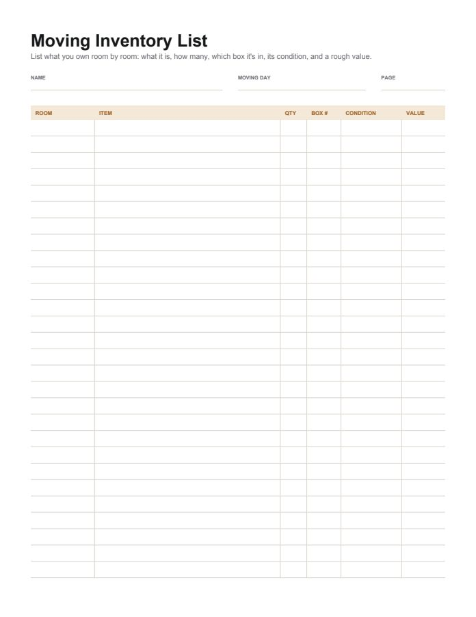
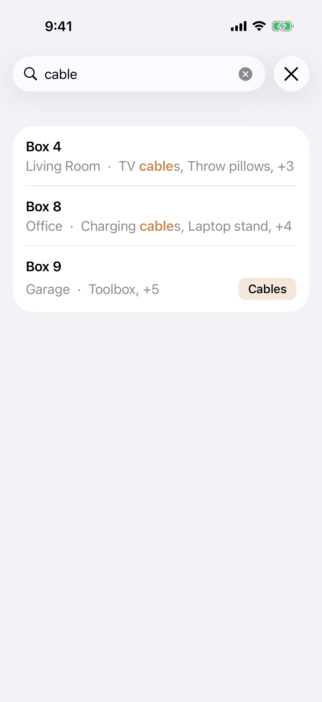

Free printable
Moving inventory list template.
A printable list of what you own, room by room: the item, how many, which box it's in, its condition, and a rough value. It makes unpacking faster and damage claims much easier. Free, with no email sign-up.

Moving inventory list2 pages
One line per item: room, item, quantity, box number, condition, and value. US Letter.
Download PDF →
Box-by-box checklist
One line per box, with Packed and Arrived ticks, to count boxes onto and off the truck.
Download PDF →Why keep a moving inventory?
A moving inventory is a written list of what you're moving and where it is packed. It does three jobs:
- Finding things. When you need the phone charger on night one, the list tells you it's in box 14, not “somewhere in the kitchen boxes”.
- Checking nothing went missing. Count boxes as they leave and as they arrive. A gap shows up straight away, while the movers are still there.
- Claims. If something is lost or broken, a dated list with its condition and value is the evidence a mover or insurer asks for.
How to fill in the inventory list
- Work one room at a time. Write the room in the first column and go clockwise around it, so you don't skip a shelf.
- List valuable or fragile things one by one. TVs, computers, instruments, art, jewelry, and anything you'd be upset to lose each get their own line.
- Group everyday things. “Kitchen: everyday plates and bowls, 1 set” is enough. You don't need a line for every fork.
- Add the box number as you pack. Number every box, write the number on its label, and put it in the Box # column next to what went inside.
- Note the condition before the move. “Good”, “scratch on left side”, “cracked corner”. Take a photo of anything valuable at the same time.
- Write a rough value. Use what it would cost to replace today. Keep receipts or serial numbers for anything expensive.
Keep the list with you, not in a box. Make a copy (a phone photo of each page is fine) and give one to whoever is helping you unpack.
What to include, room by room
| Room | List one by one | Group together |
|---|---|---|
| Living room | TV, speakers, game consoles, lamps, art, rugs | Books, board games, decor |
| Kitchen | Stand mixer, coffee machine, good knives, glassware sets | Pots and pans, plates, utensils, pantry food |
| Bedrooms | Jewelry, watches, mirrors, bed frames (with hardware bag) | Clothes, bedding, shoes |
| Office | Computers, monitors, printer, external drives | Files, stationery, cables |
| Garage | Power tools, bikes, ladders, grill | Hand tools, garden supplies, sports gear |
Inventory list or box checklist?
Use both if you can. The inventory list is item by item, for finding things and for claims. The box checklist is one line per box with Packed and Arrived ticks, for counting boxes on moving day. Box numbers link the two: the number on the box is the number on both lists.
Skip the paperwork
Your inventory, searchable on your phone.
Moving Box Tracker for iPhone keeps this list for you. Type or say what goes into each box, add a photo, and print a QR label. Later, search “passport” to find which box it's in, or scan a box to see its contents. Free for unlimited boxes, with no subscription.

Good to know
Questions, answered.
Do I need to list every single item?
No. List anything valuable, fragile, or hard to replace item by item. For everyday things, a line per box such as “Kitchen: pots and pans” is enough.
What's the difference between the inventory list and the box checklist?
The inventory list has one line per item, with condition and value, for insurance and damage claims. The box checklist has one line per box, with Packed and Arrived ticks, so you can count boxes on and off the truck.
How do I estimate an item's value?
Write down roughly what it would cost to replace today. Keep receipts or a screenshot of a current listing for anything expensive.
Can I fill in the inventory list on my computer?
Yes. The PDF is fillable. Open it in Preview, Acrobat Reader, or your browser, type in each row, and save or print it.
Is it really free?
Yes. No sign-up and no watermark. It's made by the developer of Moving Box Tracker as a free companion for people who prefer paper.
More free moving help